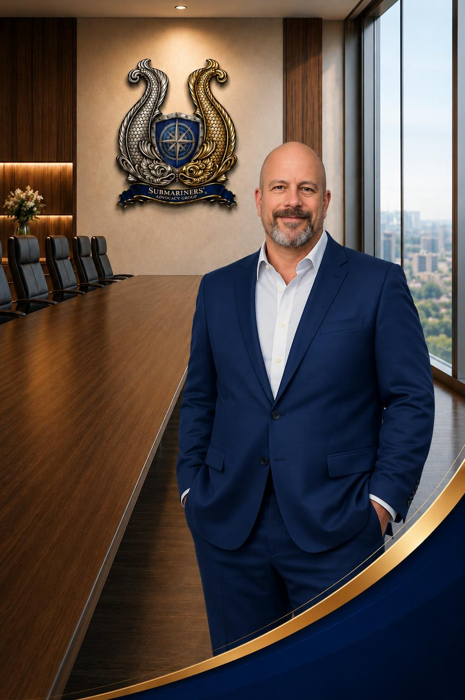

Director of Governance / Board Secretary
Scott Muranko
Scott Muranko serves on the Board of Directors for the Submariners’ Advocacy Group (SAG) as Secretary of the Board and Director of Governance. A retired U.S. Navy Senior Chief Yeoman (Submarines), Scott brings more than two decades of submarine service and over twenty years of leadership experience in manufacturing operations, workforce development, and technical training to the organization’s mission of advocating for U.S. Navy Submariners and their families.
Born and raised in Sterling, Virginia, Scott entered the United States Navy shortly after graduating high school with the intention of becoming a nuclear power operator. When a diagnosis of color blindness redirected his career path, he adapted without hesitation—transitioning into the Yeoman rating before volunteering for submarine duty and beginning what would become a distinguished twenty-year career in the Silent Service.
After completing Basic Enlisted Submarine School in January 1986, Scott reported aboard USS LEWIS AND CLARK (SSBN 644) (BLUE Crew) in Charleston, South Carolina. He earned his Qualified in Submarines designation during his second deterrent patrol and completed eight strategic deterrent patrols before transferring ashore as a Yeoman Second Class (Submarines).
Scott’s first shore assignment was with Navy Nuclear Field “A” School in Orlando, Florida, where he advanced to Yeoman First Class (Submarines). Eager to return to sea duty, he volunteered for assignment aboard USS WEST VIRGINIA (SSBN 736) (GOLD Crew) in Kings Bay, Georgia, serving as Leading Yeoman and earning selection to Chief Petty Officer following his fifth patrol with the crew.
He later served on the staff of Commander, Submarine Group Ten in Kings Bay, Georgia, where he helped oversee administrative and personnel support operations for multiple submarine crews and shore commands. Scott subsequently returned to sea aboard USS LOUISIANA (SSBN 743) (BLUE Crew), participating in the crew’s first five strategic deterrent patrols and advancing to Senior Chief Petty Officer.
Scott concluded his Navy career with Navy Recruiting District Denver, where his leadership contributed to the command being recognized as the top recruiting district in the nation for three consecutive years. Following twenty years of honorable and distinguished naval service, he retired from active duty and transferred to the Fleet Reserve.
Following his military retirement, Scott transitioned into the manufacturing and automotive sectors, building a second career focused on operational excellence, technical workforce development, and organizational training leadership. His civilian leadership experience includes positions with Coors, Lucid Motors, Carvana, and Ball Corporation. Throughout his post-Navy career, he has led large-scale technical training initiatives, building workforce development programs, and supported global manufacturing operations across multiple industries.
Since joining the SAG Board of Directors in 2025, Scott has played a central role in organizational governance modernization, board development, strategic communications, and advocacy initiatives focused on the long-term health impacts associated with submarine service. He also contributed to the development of The Unseen Burden: Toxic Exposures and Health Impacts on U.S. Navy Submariners, a landmark report examining the hidden health consequences associated with prolonged exposure to the closed-loop atmosphere aboard U.S. Navy submarines.
Scott currently resides in Phoenix, Arizona, with his wife, Melissa.